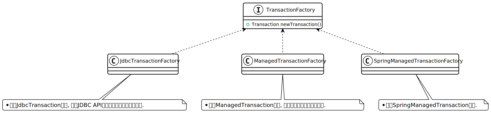
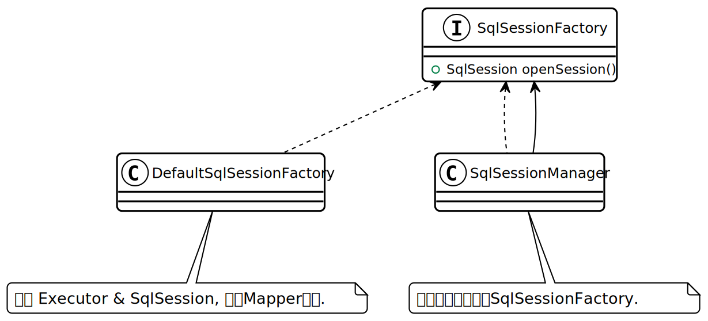
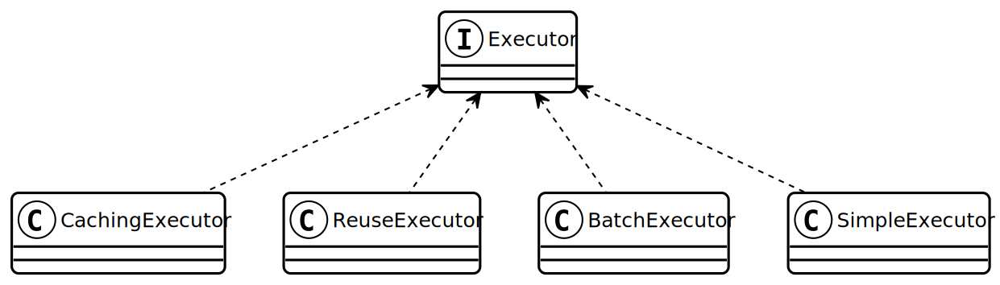
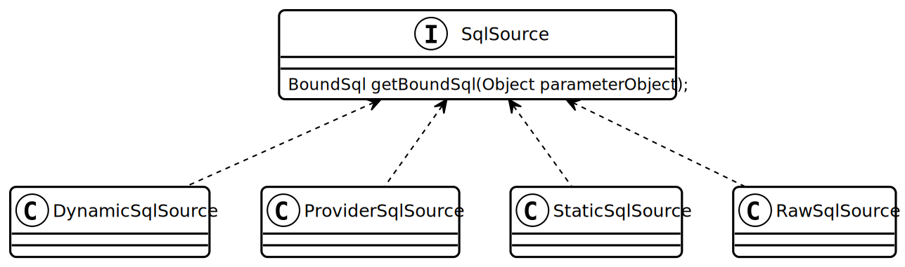
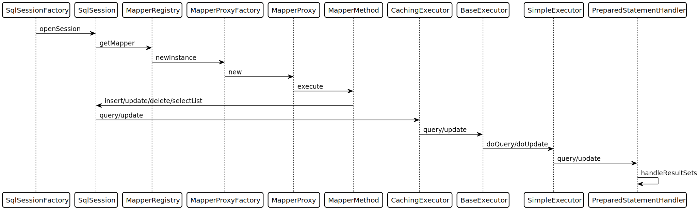

2. 基础模块
2.1. XML解析
-
使用
XPathParser封装的对XML配置文件的XPATH方式解析操作.
2.2. 反射
-
使用
Reflector类封装并缓存了Bean的get/set方法, 然后使用ReflectorFactory缓存了某个类Reflector. -
MetaObject提供了get/set对象属性的方法.
2.3. 类型转换
-
TypeHandler提供了数据库类型到Java类型的转换处理, 通过TypeHandlerRegistry向全局注册TypeHandler. -
TypeAliasRegistry提供了名称和类的映射关系.
2.4. 日志
-
org.apache.ibatis.logging.Log接口有各个日志框架的适配实现类,LogFactory会去尝试适配当前正在使用的日志框架.
2.5. 资源加载
-
VFS表示虚拟文件系统, 抽象了查找指定路径下的资源的api.
2.7. 事务

2.8. 会话

2.9. Executor

2.10. SQL解析
2.10.2. SqlSource
LanguageDriver 从XML或者注解解析sql, 创建出一个 SqlSource 模板, 用来在运行时接收外部的参数生成 BoundSql 对象.

DynamicSqlSource.java
public class DynamicSqlSource implements SqlSource {
private final Configuration configuration;
private final SqlNode rootSqlNode;
public DynamicSqlSource(Configuration configuration, SqlNode rootSqlNode) {
this.configuration = configuration;
this.rootSqlNode = rootSqlNode;
}
@Override
public BoundSql getBoundSql(Object parameterObject) {
DynamicContext context = new DynamicContext(configuration, parameterObject);
// 解析sql使用的标签, 如if/where等
rootSqlNode.apply(context);
SqlSourceBuilder sqlSourceParser = new SqlSourceBuilder(configuration);
Class<?> parameterType = parameterObject == null ? Object.class : parameterObject.getClass();
// 解析'#{}'占位符, 并将占位符替换成?号, 生成StaticSqlSource对象
SqlSource sqlSource = sqlSourceParser.parse(context.getSql(), parameterType, context.getBindings());
// 根据参数解析出真正待执行的sql
BoundSql boundSql = sqlSource.getBoundSql(parameterObject);
context.getBindings().forEach(boundSql::setAdditionalParameter);
return boundSql;
}
}3. 初始化
MyBatis初始化代码
public class MybatisApplication {
public static void main(String[] args){
TransactionFactory transactionFactory = new JdbcTransactionFactory();
Environment environment = new Environment("development", transactionFactory, dataSource); (1)
Configuration configuration = new Configuration(environment); (2)
configuration.addMapper(UserMapper.class); (3)
SqlSessionFactory sqlSessionFactory = new SqlSessionFactoryBuilder().build(configuration); (4)
}
}| 1 | Environment 对象包含了事务和数据源的具体实现类. |
| 2 | Configuration 为全局的配置类. |
| 3 | 全局注册Mapper并解析. |
| 4 | 创建一个 SqlSessionFactory 来获取 SqlSession , 以实现对数据库的操作. |
3.1. 初始化Configuration
Configuration.java
public class Configuration {
public Configuration() {
// 注册MyBatis接口自带的实现类的别名
typeAliasRegistry.registerAlias("JDBC", JdbcTransactionFactory.class);
typeAliasRegistry.registerAlias("MANAGED", ManagedTransactionFactory.class);
typeAliasRegistry.registerAlias("JNDI", JndiDataSourceFactory.class);
typeAliasRegistry.registerAlias("POOLED", PooledDataSourceFactory.class);
typeAliasRegistry.registerAlias("UNPOOLED", UnpooledDataSourceFactory.class);
typeAliasRegistry.registerAlias("PERPETUAL", PerpetualCache.class);
typeAliasRegistry.registerAlias("FIFO", FifoCache.class);
typeAliasRegistry.registerAlias("LRU", LruCache.class);
typeAliasRegistry.registerAlias("SOFT", SoftCache.class);
typeAliasRegistry.registerAlias("WEAK", WeakCache.class);
typeAliasRegistry.registerAlias("DB_VENDOR", VendorDatabaseIdProvider.class);
typeAliasRegistry.registerAlias("XML", XMLLanguageDriver.class);
typeAliasRegistry.registerAlias("RAW", RawLanguageDriver.class);
typeAliasRegistry.registerAlias("SLF4J", Slf4jImpl.class);
typeAliasRegistry.registerAlias("COMMONS_LOGGING", JakartaCommonsLoggingImpl.class);
typeAliasRegistry.registerAlias("LOG4J", Log4jImpl.class);
typeAliasRegistry.registerAlias("LOG4J2", Log4j2Impl.class);
typeAliasRegistry.registerAlias("JDK_LOGGING", Jdk14LoggingImpl.class);
typeAliasRegistry.registerAlias("STDOUT_LOGGING", StdOutImpl.class);
typeAliasRegistry.registerAlias("NO_LOGGING", NoLoggingImpl.class);
typeAliasRegistry.registerAlias("CGLIB", CglibProxyFactory.class);
typeAliasRegistry.registerAlias("JAVASSIST", JavassistProxyFactory.class);
// 注册LanguageDriver
languageRegistry.setDefaultDriverClass(XMLLanguageDriver.class);
languageRegistry.register(RawLanguageDriver.class);
}
}3.2. 注册Mapper接口
Configuration.java
public class Configuration {
public <T> void addMapper(Class<T> type) {
mapperRegistry.addMapper(type);
}
}MapperRegistry.java
public class MapperRegistry {
public <T> void addMapper(Class<T> type) {
// 这里限制了Mapper只能是接口形式
if (type.isInterface()) {
// 如果已经注册过该Mapper则会抛出异常
if (hasMapper(type)) {
throw new BindingException("Type " + type + " is already known to the MapperRegistry.");
}
boolean loadCompleted = false;
try {
// 将Mapper接口封装成MapperProxy, MapperProxyFactory是创建MapperProxy的工厂类
knownMappers.put(type, new MapperProxyFactory<>(type));
MapperAnnotationBuilder parser = new MapperAnnotationBuilder(config, type);
// 使用MapperAnnotationBuilder解析Mapper
parser.parse();
loadCompleted = true;
} finally {
if (!loadCompleted) {
knownMappers.remove(type);
}
}
}
}
}MapperAnnotationBuilder.java
public class MapperAnnotationBuilder {
public void parse() {
String resource = type.toString();
// 有可能外部先解析了mapper文件, 同时注册了Mapper接口. 此处做一个是否解析过的判断防止重复解析
if (!configuration.isResourceLoaded(resource)) {
// 加载mapper文件
loadXmlResource();
configuration.addLoadedResource(resource);
assistant.setCurrentNamespace(type.getName());
// 解析@CacheNamespace注解
parseCache();
// 解析@CacheNamespaceRef注解
parseCacheRef();
for (Method method : type.getMethods()) {
if (!canHaveStatement(method)) {
continue;
}
// 解析Mapper方法上的注解, 生成ResultMap对象
if (getAnnotationWrapper(method, false, Select.class, SelectProvider.class).isPresent()
&& method.getAnnotation(ResultMap.class) == null) {
parseResultMap(method);
}
try {
// 解析Mapper方法上的注解, 生成MappedStatement对象
parseStatement(method);
} catch (IncompleteElementException e) {
configuration.addIncompleteMethod(new MethodResolver(this, method));
}
}
}
// 解析上面未解析完的Mapper方法
parsePendingMethods();
}
private void loadXmlResource() {
if (!configuration.isResourceLoaded("namespace:" + type.getName())) {
// 默认mapper文件与Mapper接口同一个包下
String xmlResource = type.getName().replace('.', '/') + ".xml";
InputStream inputStream = type.getResourceAsStream("/" + xmlResource);
if (inputStream == null) {
try {
// 获取mapper文件
inputStream = Resources.getResourceAsStream(type.getClassLoader(), xmlResource);
} catch (IOException e2) {
// ignore, resource is not required
}
}
if (inputStream != null) {
// 使用XMLMapperBuilder解析mapper文件
XMLMapperBuilder xmlParser = new XMLMapperBuilder(inputStream, assistant.getConfiguration(), xmlResource, configuration.getSqlFragments(), type.getName());
xmlParser.parse();
}
}
}
}3.3. 解析mapper文件
XMLMapperBuilder 封装了解析mapper文件的操作, mapper文件包括以下几个标签:
-
cache-ref: 引用别的mapper文件里的缓存对象.
-
cache: 当前mapper文件使用的二级缓存对象.
-
parameterMap(已废弃使用)
-
resultMap: 结果集中的列与Bean属性的对应关系配置.
-
sql: sql代码片段, 用来重用.
-
select
-
insert
-
update
-
delete
XMLMapperBuilder.java
public class XMLMapperBuilder {
public void parse() {
if (!configuration.isResourceLoaded(resource)) {
// 解析mapper节点
configurationElement(parser.evalNode("/mapper"));
// 记录已经加载过的mapper文件, 防止重复解析
configuration.addLoadedResource(resource);
// 将当前mapper文件所属的Mapper接口注册到全局的Configuration, 如果已经注册过则不再重复注册
bindMapperForNamespace();
}
// 解析上一步未解析完的resultMap节点
parsePendingResultMaps();
// 解析上一步未解析完的cache-ref节点
parsePendingCacheRefs();
// 解析上一步未解析完的crud sql节点
parsePendingStatements();
}
private void configurationElement(XNode context) {
try {
String namespace = context.getStringAttribute("namespace");
if (namespace == null || namespace.isEmpty()) {
throw new BuilderException("Mapper's namespace cannot be empty");
}
builderAssistant.setCurrentNamespace(namespace);
// 解析cache-ref节点
cacheRefElement(context.evalNode("cache-ref"));
// 解析cache节点
cacheElement(context.evalNode("cache"));
// 解析parameterMap节点(已废弃使用)
parameterMapElement(context.evalNodes("/mapper/parameterMap"));
// 解析resultMap节点
resultMapElements(context.evalNodes("/mapper/resultMap"));
// 解析sql片段节点
sqlElement(context.evalNodes("/mapper/sql"));
// 解析crud sql节点
buildStatementFromContext(context.evalNodes("select|insert|update|delete"));
} catch (Exception e) {
throw new BuilderException("Error parsing Mapper XML. The XML location is '" + resource + "'. Cause: " + e, e);
}
}
private void cacheRefElement(XNode context) {
if (context != null) {
configuration.addCacheRef(builderAssistant.getCurrentNamespace(), context.getStringAttribute("namespace"));
CacheRefResolver cacheRefResolver = new CacheRefResolver(builderAssistant, context.getStringAttribute("namespace"));
try {
// 调用builderAssistant#useCacheRef获取Cache对象, 如果namespace未解析出来则抛出IncompleteElementException异常等待下次解析
cacheRefResolver.resolveCacheRef();
} catch (IncompleteElementException e) {
configuration.addIncompleteCacheRef(cacheRefResolver);
}
}
}
private void cacheElement(XNode context) {
if (context != null) {
String type = context.getStringAttribute("type", "PERPETUAL");
// 获取Cache实现类, 默认为PerpetualCache
Class<? extends Cache> typeClass = typeAliasRegistry.resolveAlias(type);
String eviction = context.getStringAttribute("eviction", "LRU");
// 获取缓存淘汰算法, 默认为LRU
Class<? extends Cache> evictionClass = typeAliasRegistry.resolveAlias(eviction);
// 解析缓存配置
Long flushInterval = context.getLongAttribute("flushInterval");
Integer size = context.getIntAttribute("size");
boolean readWrite = !context.getBooleanAttribute("readOnly", false);
boolean blocking = context.getBooleanAttribute("blocking", false);
Properties props = context.getChildrenAsProperties();
// 创建缓存对象, 并注册到全局的Configuration中
builderAssistant.useNewCache(typeClass, evictionClass, flushInterval, size, readWrite, blocking, props);
}
}
private ResultMap resultMapElement(XNode resultMapNode, List<ResultMapping> additionalResultMappings, Class<?> enclosingType) {
String type = resultMapNode.getStringAttribute("type",
resultMapNode.getStringAttribute("ofType",
resultMapNode.getStringAttribute("resultType",
resultMapNode.getStringAttribute("javaType"))));
Class<?> typeClass = resolveClass(type);
if (typeClass == null) {
typeClass = inheritEnclosingType(resultMapNode, enclosingType);
}
Discriminator discriminator = null;
List<ResultMapping> resultMappings = new ArrayList<>(additionalResultMappings);
List<XNode> resultChildren = resultMapNode.getChildren();
for (XNode resultChild : resultChildren) {
// 解析constructor
if ("constructor".equals(resultChild.getName())) {
processConstructorElement(resultChild, typeClass, resultMappings);
// 解析discriminator
} else if ("discriminator".equals(resultChild.getName())) {
discriminator = processDiscriminatorElement(resultChild, typeClass, resultMappings);
} else {
List<ResultFlag> flags = new ArrayList<>();
if ("id".equals(resultChild.getName())) {
flags.add(ResultFlag.ID);
}
// 解析成ResultMapping对象, 包括列名, Bean的字段名, 类型等属性.
resultMappings.add(buildResultMappingFromContext(resultChild, typeClass, flags));
}
}
// 获取ResultMap的id
String id = resultMapNode.getStringAttribute("id",
resultMapNode.getValueBasedIdentifier());
// 获取当前ResultMap继承的ResultMap
String extend = resultMapNode.getStringAttribute("extends");
// 数据库列与Bean属性是否自动映射
Boolean autoMapping = resultMapNode.getBooleanAttribute("autoMapping");
ResultMapResolver resultMapResolver = new ResultMapResolver(builderAssistant, id, typeClass, extend, discriminator, resultMappings, autoMapping);
try {
// 创建ResultMap对象
return resultMapResolver.resolve();
} catch (IncompleteElementException e) {
configuration.addIncompleteResultMap(resultMapResolver);
throw e;
}
}
private void buildStatementFromContext(List<XNode> list, String requiredDatabaseId) {
for (XNode context : list) {
// 创建XMLStatementBuilder对象来解析Statement
final XMLStatementBuilder statementParser = new XMLStatementBuilder(configuration, builderAssistant, context, requiredDatabaseId);
try {
statementParser.parseStatementNode();
} catch (IncompleteElementException e) {
configuration.addIncompleteStatement(statementParser);
}
}
}
}BuildAssistant.java
public class BuildAssistant {
public Cache useCacheRef(String namespace) {
if (namespace == null) {
throw new BuilderException("cache-ref element requires a namespace attribute.");
}
try {
unresolvedCacheRef = true;
// Configuration中有namespace与Cache的对应关系.
Cache cache = configuration.getCache(namespace);
if (cache == null) {
throw new IncompleteElementException("No cache for namespace '" + namespace + "' could be found.");
}
currentCache = cache;
unresolvedCacheRef = false;
return cache;
} catch (IllegalArgumentException e) {
throw new IncompleteElementException("No cache for namespace '" + namespace + "' could be found.", e);
}
}
public Cache useNewCache(Class<? extends Cache> typeClass,
Class<? extends Cache> evictionClass,
Long flushInterval,
Integer size,
boolean readWrite,
boolean blocking,
Properties props) {
Cache cache = new CacheBuilder(currentNamespace)
.implementation(valueOrDefault(typeClass, PerpetualCache.class))
.addDecorator(valueOrDefault(evictionClass, LruCache.class))
.clearInterval(flushInterval)
.size(size)
.readWrite(readWrite)
.blocking(blocking)
.properties(props)
.build();
configuration.addCache(cache);
currentCache = cache;
return cache;
}
public ResultMap addResultMap(
String id,
Class<?> type,
String extend,
Discriminator discriminator,
List<ResultMapping> resultMappings,
Boolean autoMapping) {
id = applyCurrentNamespace(id, false);
extend = applyCurrentNamespace(extend, true);
if (extend != null) {
if (!configuration.hasResultMap(extend)) {
throw new IncompleteElementException("Could not find a parent resultmap with id '" + extend + "'");
}
ResultMap resultMap = configuration.getResultMap(extend);
List<ResultMapping> extendedResultMappings = new ArrayList<>(resultMap.getResultMappings());
extendedResultMappings.removeAll(resultMappings);
boolean declaresConstructor = false;
for (ResultMapping resultMapping : resultMappings) {
if (resultMapping.getFlags().contains(ResultFlag.CONSTRUCTOR)) {
declaresConstructor = true;
break;
}
}
if (declaresConstructor) {
extendedResultMappings.removeIf(resultMapping -> resultMapping.getFlags().contains(ResultFlag.CONSTRUCTOR));
}
resultMappings.addAll(extendedResultMappings);
}
ResultMap resultMap = new ResultMap.Builder(configuration, id, type, resultMappings, autoMapping)
.discriminator(discriminator)
.build();
// 将ResultMap对象注册到全局Configuration中
configuration.addResultMap(resultMap);
return resultMap;
}
private void sqlElement(List<XNode> list, String requiredDatabaseId) {
for (XNode context : list) {
String databaseId = context.getStringAttribute("databaseId");
String id = context.getStringAttribute("id");
id = builderAssistant.applyCurrentNamespace(id, false);
if (databaseIdMatchesCurrent(id, databaseId, requiredDatabaseId)) {
// 记录id与sql片段的对应关系
sqlFragments.put(id, context);
}
}
}
}XMLStatementBuilder.java
public class XMLStatementBuilder {
private final MapperBuilderAssistant builderAssistant;
private final XNode context;
private final String requiredDatabaseId;
public void parseStatementNode() {
String id = context.getStringAttribute("id");
String databaseId = context.getStringAttribute("databaseId");
String nodeName = context.getNode().getNodeName();
// 解析sql类型
SqlCommandType sqlCommandType = SqlCommandType.valueOf(nodeName.toUpperCase(Locale.ENGLISH));
boolean isSelect = sqlCommandType == SqlCommandType.SELECT;
boolean flushCache = context.getBooleanAttribute("flushCache", !isSelect);
boolean useCache = context.getBooleanAttribute("useCache", isSelect);
boolean resultOrdered = context.getBooleanAttribute("resultOrdered", false);
// 解析include标签
XMLIncludeTransformer includeParser = new XMLIncludeTransformer(configuration, builderAssistant);
// 根据refid找到对应的sql标签, 将include标签替换成sql标签里的内容
includeParser.applyIncludes(context.getNode());
String parameterType = context.getStringAttribute("parameterType");
Class<?> parameterTypeClass = resolveClass(parameterType);
String lang = context.getStringAttribute("lang");
LanguageDriver langDriver = getLanguageDriver(lang);
// 解析selectKey节点
processSelectKeyNodes(id, parameterTypeClass, langDriver);
KeyGenerator keyGenerator;
String keyStatementId = id + SelectKeyGenerator.SELECT_KEY_SUFFIX;
keyStatementId = builderAssistant.applyCurrentNamespace(keyStatementId, true);
// 如果使用了自定义的selectKey sql, 则为SelectKeyGenerator
if (configuration.hasKeyGenerator(keyStatementId)) {
keyGenerator = configuration.getKeyGenerator(keyStatementId);
} else {
// 否则使用自带的Jdbc3KeyGenerator
keyGenerator = context.getBooleanAttribute("useGeneratedKeys",
configuration.isUseGeneratedKeys() && SqlCommandType.INSERT.equals(sqlCommandType))
? Jdbc3KeyGenerator.INSTANCE : NoKeyGenerator.INSTANCE;
}
SqlSource sqlSource = langDriver.createSqlSource(configuration, context, parameterTypeClass);
StatementType statementType = StatementType.valueOf(context.getStringAttribute("statementType", StatementType.PREPARED.toString()));
Integer fetchSize = context.getIntAttribute("fetchSize");
Integer timeout = context.getIntAttribute("timeout");
String parameterMap = context.getStringAttribute("parameterMap");
String resultType = context.getStringAttribute("resultType");
Class<?> resultTypeClass = resolveClass(resultType);
String resultMap = context.getStringAttribute("resultMap");
String resultSetType = context.getStringAttribute("resultSetType");
ResultSetType resultSetTypeEnum = resolveResultSetType(resultSetType);
if (resultSetTypeEnum == null) {
resultSetTypeEnum = configuration.getDefaultResultSetType();
}
String keyProperty = context.getStringAttribute("keyProperty");
String keyColumn = context.getStringAttribute("keyColumn");
String resultSets = context.getStringAttribute("resultSets");
// 将解析完成的MappedStatement对象注册到全局的Configuration里, key为namespace+id
builderAssistant.addMappedStatement(id, sqlSource, statementType, sqlCommandType,
fetchSize, timeout, parameterMap, parameterTypeClass, resultMap, resultTypeClass,
resultSetTypeEnum, flushCache, useCache, resultOrdered,
keyGenerator, keyProperty, keyColumn, databaseId, langDriver, resultSets);
}
private void parseSelectKeyNode(String id, XNode nodeToHandle, Class<?> parameterTypeClass, LanguageDriver langDriver, String databaseId) {
String resultType = nodeToHandle.getStringAttribute("resultType");
Class<?> resultTypeClass = resolveClass(resultType);
StatementType statementType = StatementType.valueOf(nodeToHandle.getStringAttribute("statementType", StatementType.PREPARED.toString()));
String keyProperty = nodeToHandle.getStringAttribute("keyProperty");
String keyColumn = nodeToHandle.getStringAttribute("keyColumn");
boolean executeBefore = "BEFORE".equals(nodeToHandle.getStringAttribute("order", "AFTER"));
// defaults
boolean useCache = false;
boolean resultOrdered = false;
KeyGenerator keyGenerator = NoKeyGenerator.INSTANCE;
Integer fetchSize = null;
Integer timeout = null;
boolean flushCache = false;
String parameterMap = null;
String resultMap = null;
ResultSetType resultSetTypeEnum = null;
// 转化成SqlSource
SqlSource sqlSource = langDriver.createSqlSource(configuration, nodeToHandle, parameterTypeClass);
SqlCommandType sqlCommandType = SqlCommandType.SELECT;
// 将selectKey标签作为MappedStatement注册进全局的Configuration里
builderAssistant.addMappedStatement(id, sqlSource, statementType, sqlCommandType,
fetchSize, timeout, parameterMap, parameterTypeClass, resultMap, resultTypeClass,
resultSetTypeEnum, flushCache, useCache, resultOrdered,
keyGenerator, keyProperty, keyColumn, databaseId, langDriver, null);
id = builderAssistant.applyCurrentNamespace(id, false);
MappedStatement keyStatement = configuration.getMappedStatement(id, false);
// 转化成KeyGenerator对象注册进全局的Configuration里
configuration.addKeyGenerator(id, new SelectKeyGenerator(keyStatement, executeBefore));
}
}4. 执行

4.1. 获取SqlSession
DefaultSqlSessionFactory.java
public class DefaultSqlSessionFactory implements SqlSessionFactory {
@Override
public SqlSession openSession() {
return openSessionFromDataSource(configuration.getDefaultExecutorType(), null, false);
}
private SqlSession openSessionFromDataSource(ExecutorType execType, TransactionIsolationLevel level, boolean autoCommit) {
Transaction tx = null;
try {
final Environment environment = configuration.getEnvironment();
final TransactionFactory transactionFactory = getTransactionFactoryFromEnvironment(environment);
// 创建Transaction对象(默认为JdbcTransaction)
tx = transactionFactory.newTransaction(environment.getDataSource(), level, autoCommit);
// 创建Executor对象(默认为SimpleExecutor)
final Executor executor = configuration.newExecutor(tx, execType);
return new DefaultSqlSession(configuration, executor, autoCommit);
} catch (Exception e) {
closeTransaction(tx); // may have fetched a connection so lets call close()
throw ExceptionFactory.wrapException("Error opening session. Cause: " + e, e);
} finally {
ErrorContext.instance().reset();
}
}
}Configuration.java
public class Configuration {
public Executor newExecutor(Transaction transaction, ExecutorType executorType) {
executorType = executorType == null ? defaultExecutorType : executorType;
executorType = executorType == null ? ExecutorType.SIMPLE : executorType;
Executor executor;
// 根据executorType创建对应的Executor实现
if (ExecutorType.BATCH == executorType) {
executor = new BatchExecutor(this, transaction);
} else if (ExecutorType.REUSE == executorType) {
executor = new ReuseExecutor(this, transaction);
} else {
executor = new SimpleExecutor(this, transaction);
}
if (cacheEnabled) {
// 装饰Executor, 提供一级缓存功能
executor = new CachingExecutor(executor);
}
// JDK动态代理executor, 根据插件类上的注解拦截对应的方法
executor = (Executor) interceptorChain.pluginAll(executor);
return executor;
}
}4.2. 生成Mapper代理
MapperRegistry.java
public class MapperRegistry {
public <T> T getMapper(Class<T> type, SqlSession sqlSession) {
final MapperProxyFactory<T> mapperProxyFactory = (MapperProxyFactory<T>) knownMappers.get(type);
if (mapperProxyFactory == null) {
throw new BindingException("Type " + type + " is not known to the MapperRegistry.");
}
try {
// 根据Mapper类型获取之前注册Mapper接口创建的MapperProxyFactory对象, 生成一个动态代理Mapper接口的对象.
return mapperProxyFactory.newInstance(sqlSession);
} catch (Exception e) {
throw new BindingException("Error getting mapper instance. Cause: " + e, e);
}
}
}4.3. 执行Mapper方法
MapperProxy.java
public class MapperProxy<T> implements InvocationHandler, Serializable {
@Override
public Object invoke(Object proxy, Method method, Object[] args) throws Throwable {
try {
if (Object.class.equals(method.getDeclaringClass())) {
return method.invoke(this, args);
} else {
// 缓存生成的MapperMethod
return cachedInvoker(method).invoke(proxy, method, args, sqlSession);
}
} catch (Throwable t) {
throw ExceptionUtil.unwrapThrowable(t);
}
}
private MapperProxy.MapperMethodInvoker cachedInvoker(Method method) throws Throwable {
try {
MapperProxy.MapperMethodInvoker invoker = methodCache.get(method);
if (invoker != null) {
return invoker;
}
return methodCache.computeIfAbsent(method, m -> {
if (m.isDefault()) {
try {
// 如果是default方法, 则用DefaultMethodInvoker调用该方法
if (privateLookupInMethod == null) {
return new MapperProxy.DefaultMethodInvoker(getMethodHandleJava8(method));
} else {
return new MapperProxy.DefaultMethodInvoker(getMethodHandleJava9(method));
}
} catch (IllegalAccessException | InstantiationException | InvocationTargetException
| NoSuchMethodException e) {
throw new RuntimeException(e);
}
} else {
// 创建一个PlainMethodInvoker用来调用MapperMethod
return new MapperProxy.PlainMethodInvoker(new MapperMethod(mapperInterface, method, sqlSession.getConfiguration()));
}
});
} catch (RuntimeException re) {
Throwable cause = re.getCause();
throw cause == null ? re : cause;
}
}
}MapperMethod.java
public class MapperMethod {
private final SqlCommand command;
private final MethodSignature method;
public Object execute(SqlSession sqlSession, Object[] args) {
Object result;
// 根据sql类型去调用SqlSession不同的方法
switch (command.getType()) {
case INSERT: {
Object param = method.convertArgsToSqlCommandParam(args);
result = rowCountResult(sqlSession.insert(command.getName(), param));
break;
}
case UPDATE: {
Object param = method.convertArgsToSqlCommandParam(args);
result = rowCountResult(sqlSession.update(command.getName(), param));
break;
}
case DELETE: {
Object param = method.convertArgsToSqlCommandParam(args);
result = rowCountResult(sqlSession.delete(command.getName(), param));
break;
}
case SELECT:
if (method.returnsVoid() && method.hasResultHandler()) {
executeWithResultHandler(sqlSession, args);
result = null;
} else if (method.returnsMany()) {
result = executeForMany(sqlSession, args);
} else if (method.returnsMap()) {
result = executeForMap(sqlSession, args);
} else if (method.returnsCursor()) {
result = executeForCursor(sqlSession, args);
} else {
Object param = method.convertArgsToSqlCommandParam(args);
result = sqlSession.selectOne(command.getName(), param);
if (method.returnsOptional()
&& (result == null || !method.getReturnType().equals(result.getClass()))) {
result = Optional.ofNullable(result);
}
}
break;
case FLUSH:
result = sqlSession.flushStatements();
break;
default:
throw new BindingException("Unknown execution method for: " + command.getName());
}
if (result == null && method.getReturnType().isPrimitive() && !method.returnsVoid()) {
throw new BindingException("Mapper method '" + command.getName()
+ " attempted to return null from a method with a primitive return type (" + method.getReturnType() + ").");
}
return result;
}
}CachingExecutor.java
public class CachingExecutor extends BaseExecutor {
@Override
public <E> List<E> query(MappedStatement ms, Object parameterObject, RowBounds rowBounds, ResultHandler resultHandler, CacheKey key, BoundSql boundSql)
throws SQLException {
// 首先从MappedStatement里的二级缓存中取值
Cache cache = ms.getCache();
if (cache != null) {
flushCacheIfRequired(ms);
if (ms.isUseCache() && resultHandler == null) {
ensureNoOutParams(ms, boundSql);
@SuppressWarnings("unchecked")
List<E> list = (List<E>) tcm.getObject(cache, key);
if (list == null) {
list = delegate.query(ms, parameterObject, rowBounds, resultHandler, key, boundSql);
tcm.putObject(cache, key, list); // issue #578 and #116
}
return list;
}
}
return delegate.query(ms, parameterObject, rowBounds, resultHandler, key, boundSql);
}
}BaseExecutor.java
// BaseExecutor实现了缓存管理和事务管理的方法, 对数据库的具体操作交由子类实现
public class BaseExecutor {
protected Transaction transaction;
protected Executor wrapper;
protected ConcurrentLinkedQueue<DeferredLoad> deferredLoads;
protected PerpetualCache localCache;
protected PerpetualCache localOutputParameterCache;
protected Configuration configuration;
protected int queryStack;
private boolean closed;
@Override
public <E> List<E> query(MappedStatement ms, Object parameter, RowBounds rowBounds, ResultHandler resultHandler, CacheKey key, BoundSql boundSql) throws SQLException {
ErrorContext.instance().resource(ms.getResource()).activity("executing a query").object(ms.getId());
if (closed) {
throw new ExecutorException("Executor was closed.");
}
// 第一次执行时如果是非select语句就会先清除一级缓存
if (queryStack == 0 && ms.isFlushCacheRequired()) {
clearLocalCache();
}
List<E> list;
try {
queryStack++;
// 如果resultHandler为null, 先从一级缓存里取结果.
// 缓存的key由MappedStatement的id, offset, limit, SQL语句, 参数和Environment的id组成
list = resultHandler == null ? (List<E>) localCache.getObject(key) : null;
if (list != null) {
handleLocallyCachedOutputParameters(ms, key, parameter, boundSql);
} else {
list = queryFromDatabase(ms, parameter, rowBounds, resultHandler, key, boundSql);
}
} finally {
queryStack--;
}
if (queryStack == 0) {
// 从缓存中拿到将延迟加载的结果集
for (BaseExecutor.DeferredLoad deferredLoad : deferredLoads) {
deferredLoad.load();
}
deferredLoads.clear();
// 如果localCacheScope为STATEMENT, 则立即清除一级缓存
if (configuration.getLocalCacheScope() == LocalCacheScope.STATEMENT) {
clearLocalCache();
}
}
return list;
}
private <E> List<E> queryFromDatabase(MappedStatement ms, Object parameter, RowBounds rowBounds, ResultHandler resultHandler, CacheKey key, BoundSql boundSql) throws SQLException {
List<E> list;
// 先在一级缓存中插入一个占位符
localCache.putObject(key, EXECUTION_PLACEHOLDER);
try {
// 执行真正的
list = doQuery(ms, parameter, rowBounds, resultHandler, boundSql);
} finally {
localCache.removeObject(key);
}
localCache.putObject(key, list);
if (ms.getStatementType() == StatementType.CALLABLE) {
localOutputParameterCache.putObject(key, parameter);
}
return list;
}
@Override
public void commit(boolean required) throws SQLException {
if (closed) {
throw new ExecutorException("Cannot commit, transaction is already closed");
}
// commit前面先清除一级缓存
clearLocalCache();
// 执行缓存的sql
flushStatements();
if (required) {
transaction.commit();
}
}
@Override
public void rollback(boolean required) throws SQLException {
if (!closed) {
try {
clearLocalCache();
// 清除本地缓存的未执行的sql
flushStatements(true);
} finally {
if (required) {
transaction.rollback();
}
}
}
}
@Override
public void clearLocalCache() {
if (!closed) {
// 清空一级缓存
localCache.clear();
localOutputParameterCache.clear();
}
}
}SimpleExecutor.java
public class SimpleExecutor extends BaseExecutor {
private final TransactionalCacheManager tcm = new TransactionalCacheManager();
@Override
public <E> List<E> doQuery(MappedStatement ms, Object parameter, RowBounds rowBounds, ResultHandler resultHandler, BoundSql boundSql) throws SQLException {
Statement stmt = null;
try {
Configuration configuration = ms.getConfiguration();
StatementHandler handler = configuration.newStatementHandler(wrapper, ms, parameter, rowBounds, resultHandler, boundSql);
stmt = prepareStatement(handler, ms.getStatementLog());
return handler.query(stmt, resultHandler);
} finally {
closeStatement(stmt);
}
}
}